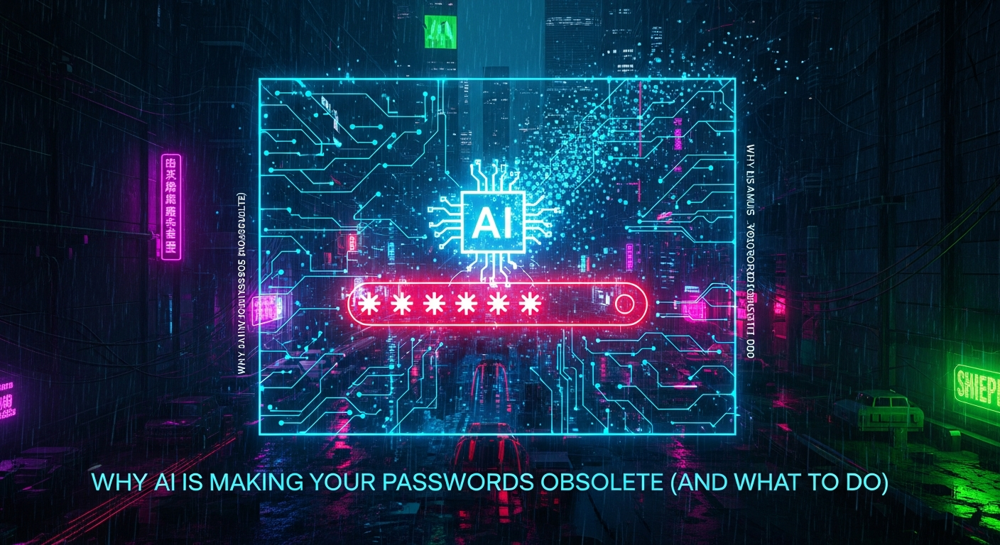

For decades, the password has stood as the primary gatekeeper to our digital lives. A string of characters, ostensibly chosen by us, meant to be a secret only we possess, has been the linchpin of cybersecurity. We've been told to make them long, complex, unique, and to change them frequently. We’ve endured the mental gymnastics of remembering dozens, sometimes hundreds, of these intricate digital keys. Yet, beneath this veneer of security, a seismic shift has been occurring. The advent and rapid proliferation of Artificial Intelligence (AI) are not just challenging the efficacy of our beloved passwords; they are fundamentally rendering them obsolete. This isn't a future threat; it's a present reality where AI's analytical prowess, speed, and capacity for learning are turning traditional password defenses into digital relics. The very mechanisms designed to protect us are now the weakest links in an increasingly interconnected and AI-driven world. Understanding this profound transformation is no longer optional; it is critical for anyone navigating the digital landscape.
The traditional understanding of password cracking often conjures images of dictionary attacks or brute-force attempts, where a computer systematically tries every possible combination until it hits the right one. While effective against weak passwords, these methods historically struggled with long, complex, and truly random strings. Enter Artificial Intelligence, and the game changes entirely. AI, particularly through machine learning algorithms and neural networks, introduces an unprecedented level of sophistication and efficiency to the art of password cracking. It moves beyond mere brute force, evolving into a predictive and adaptive adversary.
One of the primary ways AI elevates password cracking is through advanced pattern recognition. Humans, despite our best intentions, are creatures of habit. We tend to create passwords that follow predictable patterns: memorable phrases, personal information, keyboard sequences, or combinations of common words and numbers. AI algorithms, trained on vast datasets of leaked passwords, common phrases, and even social media profiles, can identify these underlying patterns with incredible accuracy. They don't just guess randomly; they learn the 'language' of human password creation. This allows AI to prioritize its cracking attempts, focusing on combinations that are statistically more likely to succeed. For instance, an AI can quickly deduce that a password containing a common word followed by a year, or a pet's name with a special character, is far more probable than a truly random string of characters, significantly reducing the search space and speeding up the cracking process.
Furthermore, AI-powered tools leverage computational power to execute these sophisticated attacks at speeds unimaginable just a few years ago. Modern GPUs, coupled with optimized AI models, can test billions or even trillions of password combinations per second. This raw processing power, combined with intelligent pattern recognition, makes even moderately complex passwords vulnerable. What might have taken a human attacker days or weeks using traditional methods can now be accomplished by an AI in mere hours or even minutes. This speed drastically shrinks the window of opportunity for users to react to compromised credentials, often before they even realize a breach has occurred. The sheer volume of attempts per second means that even a slight deviation from true randomness in your password can be quickly exploited.
Beyond simple pattern recognition, AI also excels at 'hybrid' attacks. These attacks combine elements of dictionary, brute-force, and rule-based methods, but with an intelligent layer of AI guiding the process. For example, an AI might take a known leaked password from one service, apply intelligent mutations based on common user habits (e.g., adding a number, changing a letter to a symbol, appending a common suffix like "123!"), and then test these variations against other services. This is particularly dangerous given the prevalence of password reuse across multiple platforms. An AI doesn't just try dictionary words; it intelligently generates variations of those words, incorporates known user data, and learns from previous failed attempts to refine its strategy in real-time. This iterative learning process makes AI an incredibly dynamic and relentless adversary, constantly improving its ability to guess your digital keys.
The rise of Large Language Models (LLMs) adds another formidable layer to AI's password cracking capabilities. While not directly cracking passwords in the traditional sense, LLMs can be used to generate highly plausible password candidates based on publicly available information about a target. Imagine an LLM analyzing a target's social media, blog posts, and public records to infer potential passwords like names of family members, significant dates, hobbies, or favorite phrases. It can then generate a comprehensive list of highly personalized dictionary words and phrases that are far more likely to succeed than generic lists. This turns the 'social engineering' aspect of password guessing into an automated, scalable process, making it incredibly difficult for individuals to create passwords that are truly unpredictable to an AI that knows them better than they know themselves, based on their digital footprint.
While AI's ability to crack passwords through computational power is formidable, its impact extends far beyond the realm of pure algorithmic guessing. One of the most insidious ways AI is rendering traditional passwords obsolete is by revolutionizing social engineering and phishing attacks. These methods exploit human psychology rather than technical vulnerabilities, and AI is proving to be an exceptionally adept manipulator.
Historically, phishing attacks relied on generic, often grammatically flawed emails that were relatively easy for a discerning eye to spot. Attackers cast a wide net, hoping a small percentage would fall for obvious scams. AI, particularly through advancements in Natural Language Processing (NLP) and Large Language Models (LLMs), has transformed this landscape entirely. LLMs can now generate highly sophisticated, contextually relevant, and grammatically perfect phishing emails, text messages, and even voice calls. These communications are virtually indistinguishable from legitimate ones, making it incredibly difficult for even tech-savvy individuals to identify them as fraudulent.
Imagine an AI analyzing your public social media profiles, your LinkedIn connections, your company's organizational chart, and recent news articles related to your industry. From this vast trove of data, an LLM can craft a spear-phishing email that appears to come from your CEO, a trusted colleague, or a service provider you frequently interact with. It can reference specific projects, mention recent company events, or even mimic the sender's writing style and common phrases, all designed to build trust and urgency. The email might contain a link to a fake login page that perfectly replicates your company's authentication portal, ready to harvest your credentials the moment you enter them. This level of personalization and authenticity bypasses traditional spam filters and human skepticism, turning phishing into a precision weapon.
Moreover, AI can automate the entire phishing campaign, scaling it to unprecedented levels. An AI system can identify potential targets, gather open-source intelligence on each, generate tailored attack messages, and even dynamically adjust its approach based on the target's initial responses. If a target hesitates or asks a question, the AI can formulate a convincing follow-up, maintaining the illusion of a legitimate interaction. This automation removes the human element of effort and error, allowing attackers to launch millions of highly customized attacks simultaneously, dramatically increasing their chances of success.
Voice phishing, or vishing, is another area where AI is making significant strides. With advanced voice synthesis technology, AI can clone voices from short audio samples, creating incredibly convincing imitations of trusted individuals. Imagine receiving a call from what sounds exactly like your bank manager, your child, or a senior executive, asking you to confirm personal details or authorize a transaction. The emotional impact and perceived legitimacy of a familiar voice can override critical thinking, leading individuals to divulge sensitive information, including passwords or MFA codes. This capability makes it incredibly challenging to trust even voice-based interactions, further eroding the security perimeter that passwords once provided.
The danger here is that passwords, regardless of their complexity, are useless if they are simply given away. AI's prowess in social engineering bypasses the technical strength of a password by manipulating the human element. It creates a scenario where the user, believing they are interacting with a legitimate entity, willingly hands over their credentials. This makes the human user the primary vulnerability, and AI is exceptionally good at exploiting human trust, urgency, and fear. As AI continues to advance, these attacks will only become more sophisticated, harder to detect, and more pervasive, cementing the obsolescence of passwords as a standalone defense mechanism.
For all the advice about creating strong, unique passwords, the fundamental truth remains: humans are not good at generating truly random or complex strings of characters that are also memorable. This inherent human limitation, coupled with the exponential rise of AI's analytical capabilities, creates a perfect storm that renders traditional password practices dangerously inadequate. The flaws in human-generated passwords are not minor inconveniences; they are gaping security vulnerabilities that AI is expertly designed to exploit.
One of the most pervasive flaws is password reuse. Faced with the daunting task of remembering dozens, if not hundreds, of unique, complex passwords for every online service, individuals often resort to using the same password, or slight variations thereof, across multiple accounts. This practice is akin to using the same physical key for your home, car, and office. If an attacker gains access to one of these passwords through a data breach or a successful phishing attempt, they can then use automated tools, often AI-driven, to test that same credential against numerous other popular services. This 'credential stuffing' attack is incredibly efficient when powered by AI, which can rapidly cycle through thousands of stolen username/password pairs against different websites, quickly finding accounts that share compromised credentials. The more accounts you reuse a password for, the wider the blast radius of a single compromise becomes, putting your entire digital life at risk.
Another significant flaw stems from human predictability. We tend to create passwords that are easy to remember, which often means they are based on personal information, common phrases, or simple patterns. Examples include names of pets, family members, birthdates, anniversaries, favorite sports teams, movie titles, or sequential keyboard patterns like "qwerty" or "123456". While these might seem clever or unique to the user, they are highly predictable to an AI trained on vast datasets of human-created passwords and public information. AI can cross-reference leaked password databases with publicly available data (social media, public records) to construct highly targeted dictionary attacks. For instance, an AI might learn your child's name from Facebook and your birth year from a public profile, then combine them in various common patterns (e.g., 'childnameYYYY', 'childname!YY', 'YYYYchildname') to generate a list of likely passwords. This ability to infer and predict based on context makes truly random password generation by humans an almost impossible task.
The illusion of complexity also plays a role. Many users believe that adding a special character or a number to a simple word makes their password secure. While "password123!" is technically more complex than "password," it is still highly predictable to an AI. These common alterations are often the first patterns an AI will test, having learned them from analyzing millions of compromised passwords. AI models can quickly identify common substitution patterns (e.g., '@' for 'a', '!' for 'i', '3' for 'e') and incorporate them into their cracking algorithms, rendering such "complexities" almost trivial to overcome. The entropy gained by such predictable additions is minimal in the face of AI's analytical power.
Even with the best intentions, the sheer volume of passwords required in modern digital life makes strong password management a monumental, often overwhelming, task for individuals. Password managers help, but they still rely on a single master password, which, if compromised, can unlock everything. The cognitive load of constantly creating, remembering, and updating truly unique and random passwords for every single service is unsustainable for the average user, leading to shortcuts and compromises that AI is perfectly positioned to exploit. The inherent tension between memorability and security in human password creation is a fundamental weakness that AI has now fully exposed and weaponized, making the continued reliance on them a dangerous gamble.
Humanize your text and bypass any AI detector instantly with Undetectable AI.
BYPASS AI DETECTION NOWRecognizing the inherent vulnerabilities of passwords, especially in the age of AI, the cybersecurity industry has been rapidly developing and deploying a new generation of authentication methods that aim to eliminate the password entirely. These passwordless solutions are not just incremental improvements; they represent a paradigm shift in how we prove our identity online, focusing on factors that are much harder for AI to compromise. Embracing these technologies is no longer a luxury but a necessity for robust digital security.
One of the most promising and widely adopted passwordless technologies is FIDO2 (Fast IDentity Online), which underpins the concept of Passkeys. Passkeys offer a cryptographic method of authentication that replaces passwords with a pair of cryptographic keys: a public key stored on the service and a private key stored securely on your device (e.g., smartphone, computer, hardware security key). When you log in, your device uses your private key to cryptographically sign a challenge from the service, proving your identity without ever sending a password or any secret over the network. This eliminates phishing risks, as there's no password to steal, and protects against credential stuffing. Passkeys are resistant to AI-powered attacks because they rely on strong cryptography and require physical possession of the device, often combined with a biometric verification (like a fingerprint or face scan) or a PIN. Major tech companies like Apple, Google, and Microsoft are heavily investing in and supporting passkeys, making them increasingly accessible and interoperable across platforms.
Multi-Factor Authentication (MFA), while not strictly passwordless in all implementations, is a critical stepping stone and an essential layer of defense against AI-powered password attacks. Even if an AI successfully cracks or phishes your password, MFA requires a second (or third) form of verification before access is granted. This second factor can be something you have (like a code from an authenticator app, a hardware security key like YubiKey, or a one-time password sent via SMS) or something you are (biometrics). While SMS-based MFA has known vulnerabilities, app-based MFA (e.g., Google Authenticator, Microsoft Authenticator, Authy) and hardware keys like FIDO U2F/FIDO2 keys (e.g., YubiKey, SoloKeys) offer significantly stronger protection. These methods make it exponentially harder for AI to gain access, as it would need to compromise not only your password but also your physical device or biometric data.
Biometric authentication is another cornerstone of the passwordless future. This involves using unique biological characteristics to verify identity, such as fingerprints, facial recognition, iris scans, or even voice recognition. Modern biometric systems, often integrated directly into smartphones and laptops, employ sophisticated sensors and AI algorithms to accurately match a user's unique traits. For instance, Face ID on iPhones or Windows Hello on PCs use advanced 3D scanning and machine learning to verify identity, making them highly resistant to spoofing. While concerns about the immutability of biometrics exist (you can't change your fingerprint if it's compromised), the underlying security often relies on secure enclaves within devices that process and store biometric data locally, preventing its theft or replication by external AI attackers. When combined with other factors, biometrics offer a convenient and robust authentication experience.
Beyond these, emerging technologies like behavioral biometrics are gaining traction. This involves continuously monitoring unique user behaviors, such as typing rhythm, mouse movements, gait, or even how you hold your phone, to continuously verify identity in the background. AI and machine learning algorithms build a unique profile of your typical behavior, and any deviation from this profile can trigger additional authentication challenges or flag suspicious activity. Companies like BioCatch and NuData Security are leaders in this space, providing a dynamic and adaptive layer of security that operates silently, making it incredibly difficult for an AI impersonator to mimic your entire behavioral signature for an extended period.
For organizations, implementing Zero-Trust Architectures is paramount. A zero-trust model fundamentally assumes that no user, device, or application should be trusted by default, regardless of whether they are inside or outside the network perimeter. Every access request is verified, authorized, and continuously monitored. This approach, often combined with passwordless authentication methods, drastically reduces the attack surface for AI-powered threats. Solutions from vendors like Okta, Duo Security (Cisco), and Microsoft Azure AD offer comprehensive identity and access management platforms that support these advanced authentication methods and zero-trust principles, moving beyond the flawed reliance on static passwords.
The shift away from passwords is not a distant future but an immediate imperative. While the complete eradication of passwords might take time, there are concrete, practical steps individuals and organizations can take right now to mitigate the risks posed by AI and prepare for the inevitable passwordless future. Proactive measures are crucial to safeguarding your digital identity and assets in this evolving threat landscape.
For individuals, the most immediate and impactful step is to enable Multi-Factor Authentication (MFA) on every single account that offers it. Do not rely solely on SMS-based MFA if stronger options are available. Prioritize authenticator apps like Google Authenticator, Microsoft Authenticator, or Authy, or even better, invest in hardware security keys like a YubiKey or SoloKeys that support FIDO2/U2F standards. These hardware keys provide the strongest form of MFA, as they require physical possession and are resistant to phishing. Even if an AI cracks your password, it cannot log in without the second factor. Make this a non-negotiable security standard for your email, banking, social media, and any other critical online service.
Start transitioning to Passkeys wherever they are supported. As major platforms like Google, Apple, and Microsoft roll out passkey support, actively opt-in and use them. Passkeys offer a superior user experience and significantly enhanced security over traditional passwords, as they are phishing-resistant and cryptographically secure. Familiarize yourself with how they work on your devices and make them your default authentication method for compatible services. This is perhaps the most significant individual step you can take towards a passwordless future.
Utilize a reputable password manager (e.g., 1Password, LastPass, Bitwarden, Dashlane) to generate and store truly unique, complex passwords for services that do not yet support MFA or passkeys. While password managers still rely on a master password, they eliminate password reuse and ensure that each account has a strong, AI-resistant credential. Ensure your master password for the manager is exceptionally strong, unique, and protected by MFA. Regularly audit your password manager for weak or reused passwords and update them. This serves as a strong interim solution while the world fully transitions to passwordless.
Educate yourself and stay informed about social engineering tactics. Understand that AI-generated phishing attacks will become increasingly sophisticated and personalized. Be skeptical of unsolicited emails, messages, or calls, especially those that create a sense of urgency or ask for personal information. Verify the sender's identity through an independent channel (e.g., call the company using a known official number, not one provided in the suspicious message). Never click on suspicious links or download attachments from unverified sources. Your human vigilance remains a critical, albeit fallible, line of defense against AI's manipulative capabilities.
For organizations, the steps are more systemic. Implement a comprehensive Zero-Trust Architecture. This means verifying every user, device, and application before granting access, regardless of their location. Adopt robust Identity and Access Management (IAM) solutions from vendors like Okta, Duo Security (Cisco), or Microsoft Azure AD to centralize identity management and enforce strong authentication policies. Mandate MFA for all employees and move towards passwordless authentication methods like FIDO2/Passkeys wherever possible. Invest in continuous monitoring and behavioral analytics tools (e.g., BioCatch, Exabeam) that can detect anomalous user behavior, which might indicate an AI-powered compromise.
Regularly conduct security awareness training for employees, specifically focusing on AI-powered phishing, deepfakes, and social engineering. Simulate these attacks to test employee resilience and reinforce best practices. Ensure that your incident response plan is updated to address the speed and sophistication of AI-driven attacks. Finally, leverage AI yourself: deploy AI-driven threat detection and response systems (ee.g., Darktrace, CrowdStrike Falcon) that can identify and neutralize AI-powered attacks in real-time, turning AI into an ally in your defense strategy.
As we stand on the precipice of a fundamentally transformed digital landscape, the future of identity authentication promises to be a dynamic and continuously evolving field, driven by both the advancements in AI and the escalating need for more robust security. The journey beyond passwords is not merely about replacing one form of authentication with another; it's about reimagining how we establish trust and verify identity in an increasingly complex and interconnected world where AI is both a threat and a potential solution.
The trajectory points towards a future where identity verification is less about a single secret and more about a continuous, adaptive process. This concept, often termed continuous authentication, moves beyond the one-time login event. Instead, AI and machine learning algorithms will constantly monitor various signals – behavioral biometrics (how you type, move your mouse, interact with your device), contextual data (your location, network, time of day), and device attributes – to build a dynamic trust score. If your behavior deviates significantly from your established pattern, the system might quietly request additional verification... and implement these strategies to ensure long-term success.
In summary, staying ahead of these trends is the key to business longevity and security. By following this guide, you maximize your growth and ensure a stable digital future.
Don't wait for the headlines. Our Private Telegram Channel delivers real-time AI security updates and digital wealth strategies before they go viral. Stay protected. Stay ahead.
⚡ JOIN THE 1% NOW